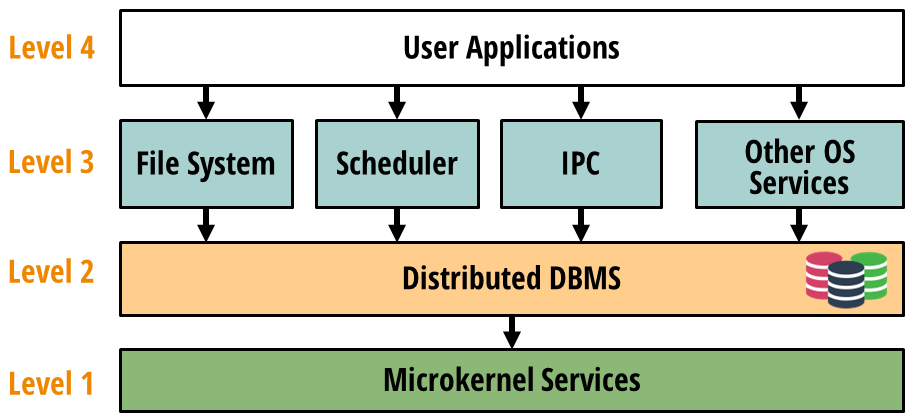

Today, most people develop on operating systems such as Linux which are more than thirty years old, even though computing has changed a lot in the meantime. Since Linux was first released in 1991, the amount of state and data applications manage has grown by several orders of magnitude, many applications have moved to the cloud, and the world has woken up to the critical importance of security and data governance. Using powerful tools like Spark and Kubernetes, developers have adapted to the ever-growing scale of computing, but these introduce a great deal of accidental complexity into even basic operations. To make developing at scale easier, we—a team of almost twenty people at Stanford, MIT, UW-Madison, Google, VMWare, and other institutions—are drastically rethinking the way people build distributed applications. We're proposing a database-oriented operating system (DBOS): an idea for a new generation of operating systems that natively support large-scale distributed applications in the cloud.
We believe the next generation of operating systems should be database-oriented because databases are built to solve the hard problems of modern computing. Databases today can manage petabytes of data, are distributed and increasingly cloud-native, and can secure and govern data with fine-grained access control and provenance tracking. To leverage these capabilities, we propose building a database-oriented operating system around two principles:
- Store all application and OS state in tables in a distributed database.
- Access state only through database transactions
We see two major advantages to adopting these principles. First, many critical properties, such as atomicity, durability, availability, and consistency, can be implemented once in the DBMS and automatically inherited by the OS and by applications, simplifying building applications at scale. Second, we can use powerful database provenance and logging capabilities to track accesses and updates to application state, simplifying analyzing, monitoring, debugging, and securing applications.
Our proposal for DBOS follows a four-level architecture:

At Level 1, a kernel provides low-level OS services such as device drivers and memory management. At Level 2, a distributed DBMS runs on those services. At Level 3, we build high-level OS services such as a distributed file system, cluster scheduler, and distributed inter-process communication (IPC) subsystem on top of the DBMS. At Level 4, users write applications. We hope to support the high-level languages and frameworks people use today, but interfacing with DBOS services instead of making Linux system calls or depending on a cluster manager like Kubernetes. We believe that by implementing DBMS-oriented abstractions for distributed operations like cluster scheduling or message passing in the OS, we can simplify building distributed applications.
We have been working on DBOS for over a year and have prototyped it in two phases. In the first phase, discussed in papers published in VLDB'22 and CIDR'22, we prototyped proof-of-concept DBMS-oriented implementations of OS services such as a file system, scheduler, and IPC subsystem, demonstrating they were practical. In the second phase, discussed in an arXiv paper currently undergoing peer review, we implemented a programmable environment based on DBOS principles, a function-as-a-service (FaaS) platform we call Apiary, and showed it could run user applications at scale.
Our prototypes have convinced us that DBOS is practical, so we are now planning the next phase of the project: implementing a complete database-oriented development stack for distributed applications. To make this possible, we have to solve several major challenges. The most pressing is the question of what database to use. Based on our experiences building our prototypes, we believe that only a distributed in-memory database can give us the scalability and performance we need. However, DBOS requires many features that existing such databases lack, so we are must figure out how to implement them. Members of our team are currently researching:
- Better tradeoffs between local and distributed transactions in a distributed database, leveraging cutting-edge research on high-performance distributed transactions (our Lotus work, published in VLDB'22).
- Better ways to support multiple data stores and data models in the DBOS backend, enabling operations like analytics and file I/O for which traditional databases are inefficient.
- New infrastructure leveraging data provenance to make debugging distributed applications easier.
- Better support for larger-than-memory datasets in in-memory databases, building on prior work from members of our team such as anti-caching.
- More efficient auto-scaling and resource management in distributed in-memory databases
- Which OS services should be implemented below the DBMS (i.e., in the kernel) and which should be programmed on top of it in a database-oriented manner?
- What programming interface should DBOS provide? Should it have a function-as-a-service programming model like our Apiary prototype or something else entirely?